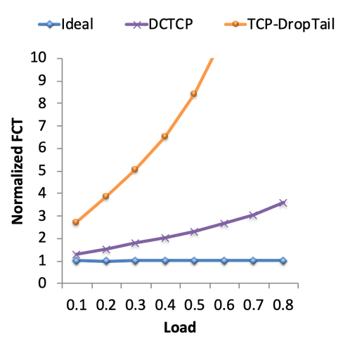

Kiểm soát tắc nghẽn trong Datacenter (Congestion Control in Datacenters)
Tại sao Datacenter lại khác biệt? (Why are Datacenters Different?)
Chúng ta đã thấy rằng mạng datacenter (trung tâm dữ liệu) có những ràng buộc bổ sung (ví dụ: nằm trong cùng một tòa nhà, thuộc sở hữu của một operator – nhà vận hành) so với các mạng đa dụng (general-purpose networks). Điều này có thể dẫn đến việc xuất hiện các protocol (giao thức) đặc thù, tận dụng các đặc điểm riêng của mạng. Trong phần này, chúng ta sẽ tìm hiểu các TCP congestion control algorithm (thuật toán kiểm soát tắc nghẽn TCP) có thể không hoạt động hiệu quả trên Internet nói chung, nhưng lại hiệu quả trong bối cảnh datacenter. Đây là một lĩnh vực nghiên cứu và phát triển đang rất sôi động.
Trước tiên, cần trả lời: Điều gì khiến kiểm soát tắc nghẽn trong datacenter khác biệt?
Nhớ rằng packet delay (độ trễ gói tin) bao gồm:
- Transmission delay (độ trễ truyền): thời gian để phát tín hiệu bit lên đường truyền, phụ thuộc vào bandwidth (băng thông).
- Propagation delay (độ trễ lan truyền): thời gian để bit di chuyển qua đường truyền.
- Queuing delay (độ trễ hàng đợi).
Trong datacenter, transmission delay thường rất nhỏ (vì có các liên kết tốc độ cao 10 Gbps). Propagation delay cũng nhỏ (vì tất cả server nằm trong cùng tòa nhà). Do đó, queuing delay thường là nguồn gây trễ chính. Ngược lại, trên Internet diện rộng (wide-area Internet), propagation delay có thể lớn hơn hàng bậc độ lớn (ví dụ: packet phải đi xuyên quốc gia) và thường là nguyên nhân chính gây trễ.
Nhớ rằng TCP congestion control cố tình làm đầy hàng đợi cho đến khi packet bị mất (phát hiện tắc nghẽn bằng cách kiểm tra mất gói). Các nhà thiết kế TCP ban đầu không tính đến bối cảnh datacenter, nơi queuing delay có thể ảnh hưởng lớn hơn nhiều đến hiệu năng.
Vấn đề hàng đợi lớn càng nghiêm trọng hơn trong datacenter vì, khác với Internet diện rộng, hầu hết kết nối trong datacenter thuộc một trong hai loại:
- Mice: kết nối ngắn, nhạy cảm với độ trễ. Ví dụ: truy vấn tìm kiếm web và trang kết quả chỉ chứa lượng dữ liệu rất nhỏ, nhưng cần trả kết quả cho người dùng thật nhanh.
- Elephants: kết nối lớn, nhạy cảm với thông lượng (throughput). Ví dụ: sao lưu dữ liệu từ server này sang server khác cần kết nối dài, truyền lượng dữ liệu lớn với throughput cao.
Nếu chạy TCP congestion control với cả hai loại kết nối này, các elephant sẽ tăng tốc độ cho đến khi hàng đợi đầy. Khi đó, các mice đến sau sẽ bị kẹt trong hàng đợi, gây trễ.
Để tối ưu hiệu năng cho các loại kết nối này, thuật toán kiểm soát tắc nghẽn trong datacenter phải tránh làm đầy hàng đợi. Nhiều giải pháp đặc thù cho datacenter đã được phát triển trong những năm gần đây.
Ví dụ: BBR được Google phát hành năm 2016. Thay vì phát hiện tắc nghẽn bằng cách kiểm tra mất gói (yêu cầu hàng đợi đầy), BBR phát hiện tắc nghẽn bằng cách kiểm tra packet delay.
DCTCP: Phản hồi từ Router (DCTCP: Feedback from Routers)
DCTCP (Datacenter TCP) được Microsoft phát hành năm 2010 và hiện được sử dụng rộng rãi (ví dụ: đã được triển khai trong Linux kernel).
Nhớ rằng IP header có một ECN bit (Explicit Congestion Notification), và router có thể bật bit này để báo hiệu đang tắc nghẽn. Khi packet đến đích, ACK cũng sẽ có ECN bit được bật, báo cho bên gửi giảm tốc độ.
Trong DCTCP, router sẽ bật ECN bit khi độ dài hàng đợi vượt quá một ngưỡng nhất định. Điều này cho phép bên gửi phát hiện và thích ứng với tắc nghẽn sớm hơn (khi hàng đợi đang đầy dần, trước khi đầy hoàn toàn).
Khi phát hiện tắc nghẽn, bên gửi giảm tốc độ tỷ lệ thuận với số lượng packet có ECN bit được đánh dấu. Điều này giúp điều chỉnh tốc độ nhẹ nhàng hơn. Thay vì quyết định nhị phân (có hoặc không tắc nghẽn), bên gửi có thể nhận biết mức độ tắc nghẽn và giảm tốc độ một chút để bù.
ECN bit không hiệu quả trên Internet diện rộng vì không phải tất cả router đều hỗ trợ. Tuy nhiên, trong datacenter, operator kiểm soát toàn bộ switch và có thể cấu hình chúng bật ECN một cách đồng bộ. Trên thực tế, triển khai DCTCP tại host và router chỉ cần thay đổi nhỏ.
Để đo hiệu năng của DCTCP, ta có thể đo Flow Completion Time (FCT) – thời gian từ khi byte đầu tiên được gửi đến khi byte cuối cùng được nhận. Chuẩn lý tưởng là thời gian hoàn thành nếu dùng một omniscient scheduler (bộ lập lịch toàn tri) có kiến thức toàn cục về toàn bộ mạng và tất cả kết nối, để lập lịch và phân bổ băng thông tối ưu.
Biểu đồ này cho thấy normalized FCT (FCT chuẩn hóa) – tỷ lệ giữa FCT thực tế và FCT lý tưởng. Nó cho biết chúng ta kém lý tưởng bao nhiêu. Có thể thấy TCP congestion control tiêu chuẩn kém hơn lý tưởng 3 lần, và kém tới 10 lần nếu tải mạng cao. Ngược lại, DCTCP hoạt động tốt hơn đáng kể, kết nối hoàn thành nhanh hơn nhiều với ít queuing delay hơn.
pFabric: Ưu tiên gói tin (Packet Priorities)
Chúng ta đã thấy vấn đề trong datacenter là mice có thể bị kẹt sau elephant trong hàng đợi. Vậy nếu cho mice cách “vượt hàng” để hoàn thành nhanh hơn thì sao?
Để ưu tiên mice, ta gán một priority number (số ưu tiên) cho mỗi packet. Số ưu tiên được tính dựa trên remaining flow size (kích thước luồng còn lại – số byte chưa được ACK). Số nhỏ hơn có ưu tiên cao hơn.
Với hệ thống này:
- Packet của mice sẽ có ưu tiên cao (flow size rất nhỏ).
- Elephant sẽ có ưu tiên thấp, nhưng vài byte cuối của kết nối elephant sẽ có ưu tiên cao hơn. Điều này giúp ưu tiên các kết nối gần hoàn tất (dù là elephant).
Để triển khai, nhớ rằng IP packet header có trường chỉ định ưu tiên. Trong pFabric, mỗi packet mang một số ưu tiên, và switch được chỉnh sửa để gửi packet có ưu tiên cao nhất. Nếu hàng đợi đầy, switch sẽ drop packet có ưu tiên thấp nhất.
Với hệ thống ưu tiên này, bên gửi có thể truyền và truyền lại packet ở full line rate (tốc độ tối đa của đường truyền) mà không cần điều chỉnh tốc độ vì tắc nghẽn. Chỉ khi mất gói nghiêm trọng (ví dụ: timeout) mới cần giảm tốc độ.
Nếu xem lại biểu đồ FCT, ta thấy pFabric còn tốt hơn DCTCP và gần với lý tưởng.

Tại sao pFabric hoạt động tốt? Elephant và mice cùng truyền, mọi người đều gửi ở full line rate, đảm bảo tận dụng tối đa băng thông. Không mất thời gian cho slow start. Ngoài ra, tránh được sụp đổ vì hầu hết packet của elephant có ưu tiên thấp. Hệ thống ưu tiên đảm bảo packet của mice vẫn đi qua hàng đợi với độ trễ thấp.
Triển khai hệ thống này đòi hỏi thay đổi đáng kể ở cả switch và end host, và cần toàn quyền kiểm soát cả hai. Switch phải hỗ trợ hệ thống ưu tiên, và bên gửi phải thay thế TCP implementation để gửi ở full line rate. Dù vậy, pFabric là ví dụ điển hình về sự hợp tác giữa mạng (switch) và end host để đạt hiệu năng cao.